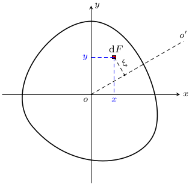
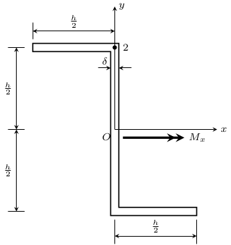
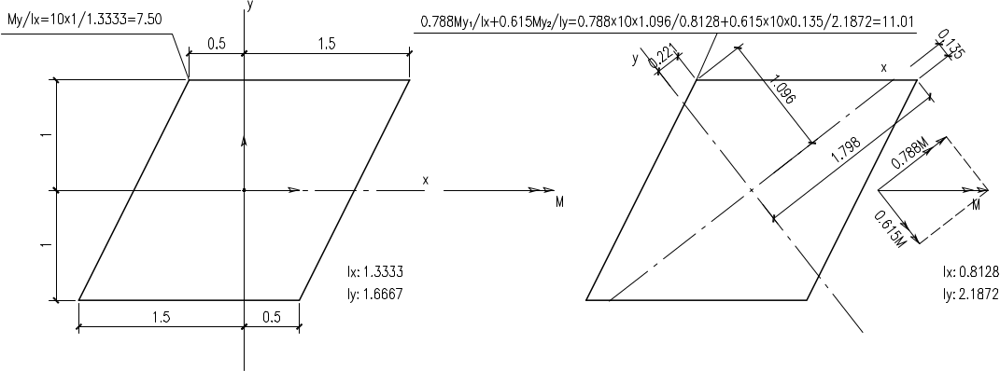
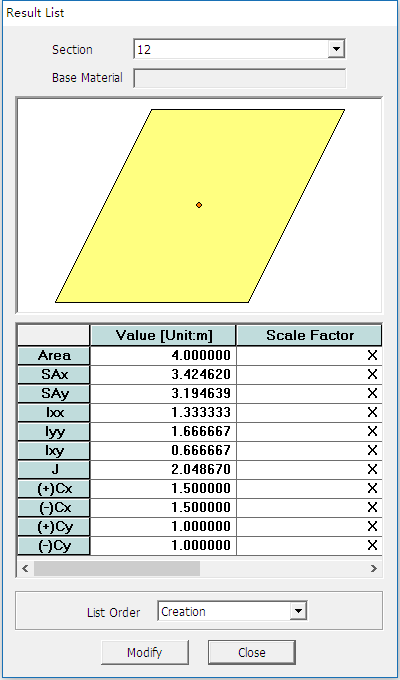
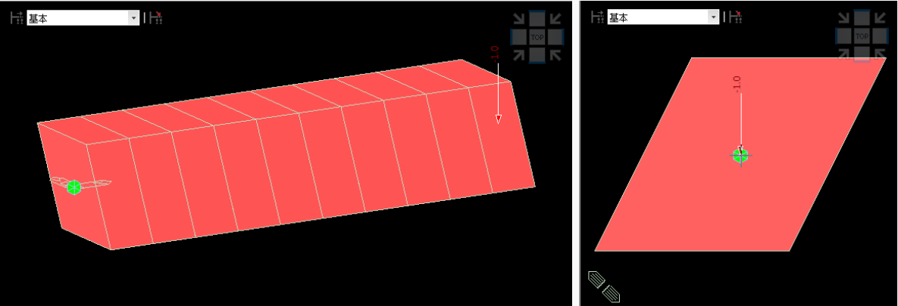
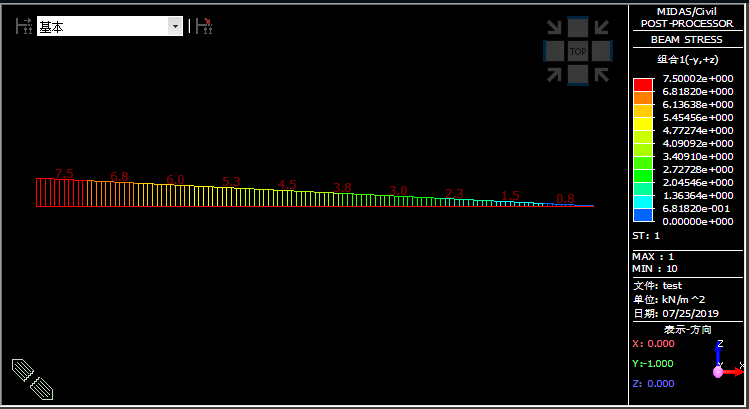
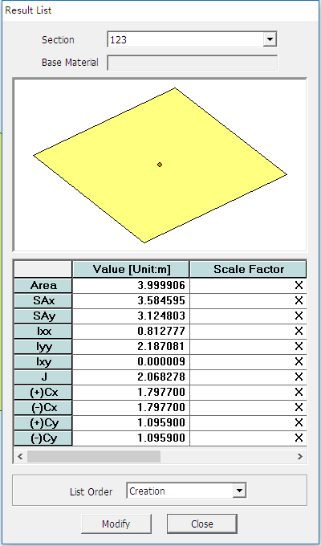
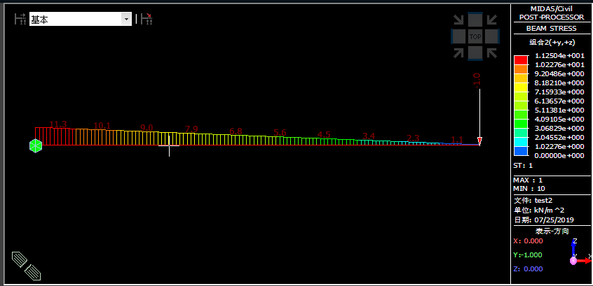

具有轴对称平面的梁，当横向荷载作用于同一平面内时，梁也就在此平面内弯曲，这种弯曲形式被称为 对称弯曲；如果荷载作用不在对称平面内，将会发生非对称弯曲现象，这种弯曲形式被称为 斜弯曲；倘若梁截面本身就不对称，将会产生另一种非对称弯曲现象，如果忽视了这种非对称弯曲的影响，则结构分析的结果可能对弯曲应力水平估计不足，必须引起设计人员的重视。本文将对这种弯曲形式进行讨论。
构件广义弯曲截面正应力的推导
如下图所示：一具有任意横截面的构件，形心为 o，o–xy 为过形心的一组任意直角坐标系，设沿 ox 、oy 分别有弯矩 Mx、My 作用，符合右手螺旋定则。

现假设截面中性轴为 oo′，截面上任意一点微面积 dF 的坐标为 x、y，它到中性轴的距离为 ξ，则：
ξ=ycosα−xsinα
根据平截面假定，该点处的正应变为：
εz=ρ1ξ
式中：ρ 为中性层的曲率半径；α 为中性轴与 x 轴的夹角。因此正应力为：
σz=Eρξ=ρEycosα−ρExsinα
因为沿平面法向无外力作用，故
∫FσzdF=0
即
∫FξdF=0
由绕 x、y 轴的力矩平衡方程，可以得到：
⎩⎪⎪⎪⎪⎪⎪⎪⎪⎪⎨⎪⎪⎪⎪⎪⎪⎪⎪⎪⎧Mx==My=∫FσzydF=∫FρEy2cosαdF−∫FρExysinαdFρEcosαIx−ρEsinαIxy∣∣∣∣∣∣−∫FσzxdF=ρEsinαIy−ρEcosαIxy
式中，Ix、Iy 为两个形心轴的惯性矩，Ixy 为惯性积。
由上式解出 ρEsinα 与 ρEcosα，代入正应力表达式，则有：
σz=IxMˉxy−IyMˉyx
式中。Mˉx、Mˉy 称为 有效弯矩，分别为：
⎩⎪⎪⎪⎪⎨⎪⎪⎪⎪⎧MˉxMˉy=1−Ixy2/(IxIy)Mx+MyIxy/Iy=1−Ixy2/(IxIy)My+MxIxy/Ix
上式的推导过程中，只利用了几何方程、物理方程和平衡方程，因而与杆件截面的几何形状和尺寸无关，故以上结果适用于任意截面。这个公式可用于计算任意梁中的弯曲应力，即 广义弯曲应力计算公式，x、y 轴仅需要为一对相互垂直的轴，不必一定是主轴。
简化问题，令 My=0，即仅考虑单方向弯矩问题，则截面正应力为：
σz==IxMˉxy−IyMˉyxIxIy−Ixy2MxIyy−IxIy−Ixy2MxIxyx=IxIy−Ixy2Mx(Iyy−Ixyx)
同理，当 Mx=0 时，截面正应力为：
σz=IxIy−Ixy2My(−Ixx+Ixyy)
进一步简化问题，假定 x、y 轴均为截面的主轴，则有：Ixy=0， 单方向弯矩作用下（My=0）的截面应力即为：
σz=IxMxy
该式即为通常使用的截面正应力的计算公式。
很明显，在进行构件弯曲应力计算的时候，我们需要确定形心主轴位置，然后将弯矩分解成这些主轴的分量再进行应力计算。然而有一些情况下，截面中非主轴的截面特性和荷载作用更容易计算获取，则截面应力应按 广义弯曲应力计算公式 进行计算。如果忽略了非对称弯曲的影响，仍使用通常的截面正应力计算公式，则将对计算结果产生较大的影响。
为了简化对比分析，我们仍然考虑单方向弯矩问题。对比两式，分别记截面正应力为 σz 与 σz′，即：
σz=σz′=Ix−Ixy2/IyMxy−IxIy−Ixy2MxIxyxIxMxy
显然，截面应力总存在 −IxIy−Ixy2MxIxyx>0 的最值点，若采用了 σz′ 的计算公式，则总有应力最值点满足：
σz′<Ix−Ixy2/IyMxy<σz
因此，忽略非对称弯曲的影响将低估截面正应力水平。
算例对比
薄壁杆件手算示例
求解下图所示 Z 形截面薄壁杆件在弯矩 Mx 作用下的 2 点的正应力。

【解答】
-
截面几何特性：此截面为反对称截面，形心在腹板中心 O 点。
IxIyIxy=2×2δh×(2h)2+12δh3=31δh3=2×3δ×(2h)3=121δh3=2δh×(−4h)×2h+2δh×4h×(−2h)=−81δh3
-
应力计算
σz==IxIy−Ixy2Mx(Iyy−Ixyx)(361−641)δh3Mx(121y+81x)=δh3Mx(748y+772x)=δh3Mx×748×2h≈δh23.43Mx
-
忽略非对称弯曲影响的应力计算
略去非对称弯曲影响，正应力为：
σz=IxMxy=31δh3Mx×2h=δh21.5Mx
仅为正确结果的 42.7%。
实心截面有限元程序分析
实际工程中我们不可能都采用手算分析，因此必须考虑有限元程序分析时的建模处理。现以一个实心截面说明在 Midas 程序中得到正确结果的建模方法。
一跨径 10m 的平行四边形截面等截面悬臂梁，梁端作用 1kN 的单位竖向力，求取梁端截面最大应力。梁截面及按正误两种方法的手算结果如图所示：

错误建模方法
- 以 Midas SPC 创建截面，截面一对平行边水平设置，导出截面。

- 截面导入 Midas 进行分析

- 分析得到错误结果

正确建模方法
- 以 Midas SPC 创建截面，先寻找截面主轴，将截面某一主轴旋转为水平设置，导出截面。

- 截面导入 Midas，调整单元截面的 β 角，使得一条边水平，与实际原型一致，进行分析。
- 分析得到正确结果

本例中，截面主轴角度与单元截面 β 角设置存在一定误差，结果与精确解存在误差，但这种误差在可接受范围内。